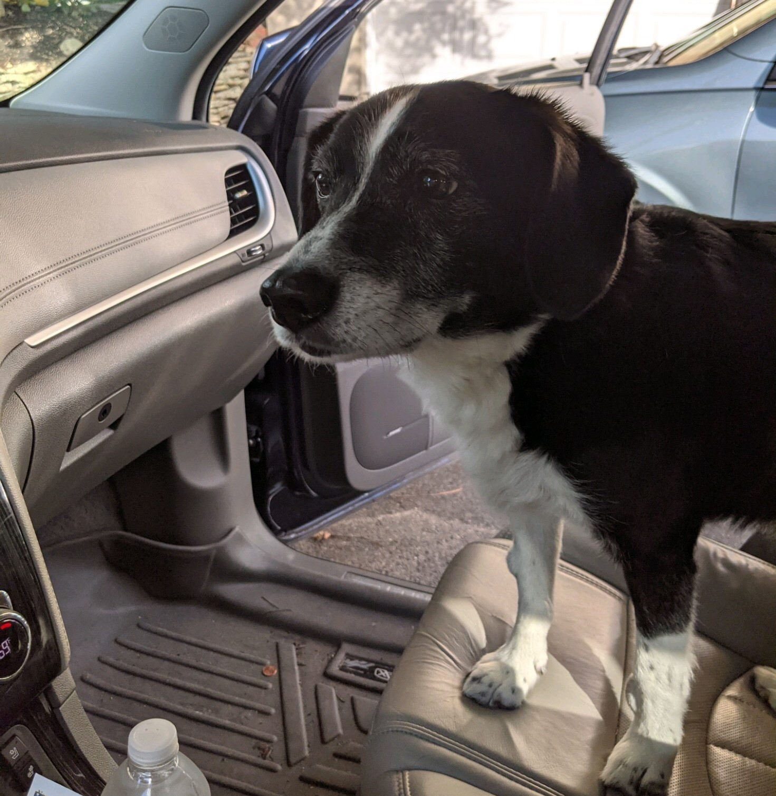

Personal Life

I am from Bethlehem, a town in eastern Pennsylvania, where I have lived my entire life.
My favorite places around town are The Cup and Geakers.
My favorite events in Bethlehem are Musikfest and the Peep drop.
Musikfest is the nation's largest free music festival and has been running since 1984.
The Peep Drop is an annual celebration put on by Just Born where they drop a 400lb peep to ring in the New Year.I have two older siblings, Ben and Grace.

And this is my dog Pete. (He's 15)
I enjoy reading, painting, and watching bad reality tv.

Here is one of my favorite paintings, done by Frank W. Benson